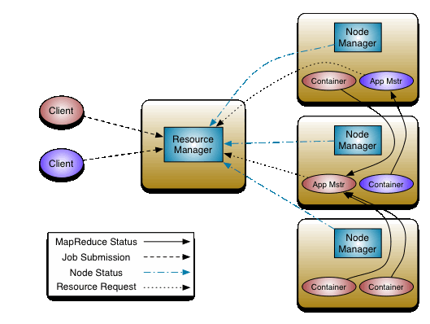

由于对Python比较熟悉，公司要使用Python进行大数据处理，本文记录了处理大数据过程的内容，内容比较杂乱，后期会单独整理成独立的文章。
名词与理论
名词
- RDD: Resilient Distributed Dataset, 弹性式分布数据集
- HDFS: Hadoop Distributed File System
- JDBC: Java DataBase Connectivity, java数据库连接
- ETL: Extract-Transform-Load 用来描述将数据从来源端经过抽取（extract）、交互转换（transform）、加载（load）至目的端的过程
- BI: Business Intelligence 商业智能
- ORM: Object Relational Mapping 即对象-关系映射，就是把关系数据库的一行映射为一个对象，也就是一个类对应一个表，这样，写代码更简单，不用直接操作SQL语句。
理论
spark几个概念
spark是一个快速的，多用途的集群计算系统。
driver就是驱动程序，简单点说就是执行submit脚本的那个进程，executor就是执行机，执行具体的运算，里面有task，task就是实际的任务，executor可能产生多个task，这些task对应一个应用(就是一个SparkContext)，但是一个executor里面有多个task，有可能会对应其它的应用。
yarn的几个概念
https://www.cnblogs.com/xubiao/p/5689427.html
ResourceManager, ApplicationManager, NodeManager, Container
hadoop几个概念
https://www.cnblogs.com/yjd_hycf_space/p/6735290.html
NameNode, DataNode
spark与yarn
使用pyspark进入shell的时候，yarn的webui(8088)里面是看不见pyspark的，因为没有使用yarn模式，当时用pyspark –master yarn的时候，yarn的webui里面可以看见一个应用程序启动了。证明spark以yarn方式执行，yarn把一个spark任务(job)当成了一个application，当然就会有对应的RM,AM,NM,Container的交互，spark也会有driver,executor的交互。
8088就是yarn的RM界面，如果启动了一个Application，可以查看AM的跟踪界面。
数据库事务
数据库事务：就是针对一系列的sql语句要么都执行成功，要么都不执行，比如银行转账，需要执行两条sql语句，一条减少转出人的账户，一条增加转入人的账户，这两条必须同时执行否则就会出错，cursor是把sql的操作放到缓存里面，如果不执行commit，是不会提交事务的，如果任意一个失败，可以使用rollback进行事物回滚，大家都不执行。
另外，记住cursor是操作的缓存，比如select语句以后，选出的内容都存放在缓冲里面，如果使用fetchall，那么取得全部数据，这时候在用fetch等一系列函数将获取不到任何数据了，因为fetchall已经把缓存里面的数据全部拿走了，当然如果使用两次的fetchone，他们获得的是两次不同的数据，也就是按次序获取如果中间再次使用了select语句，那么缓存内容被更新，当然这里不单单指select语句了，执行了任何语句，缓冲内容都会被更心，比如开始执行了select语句，马上执行insert语句，那么通过fetch函数是获取不到任何内容的cursor不论关闭还是打开，只要connection没有关闭，那么cursor都可以获取到本轮修改的内容，而不是原始数据库的内容了，如果执行了commit，此时数据库才会被修改，也就是说，没有必要关闭cursor，直接关闭connection即可。同理，如果没有commit，使用了rollback，那么重新select的数据就和数据库一致了。
其实也有个问题就是，如果有改动的操作，一定要commit后在使用select去查。另外如果一条insert，然后马上使用delete删除与此insert有相同的条件，那么数据库里面满足条件的和刚刚insert满足条件的都会被删除，当然你必须执行commit后才能提交到数据库中。
几幅图片
yarn相关

spark相关

shuffle
https://www.cnblogs.com/bonelee/p/6039202.html
https://blog.csdn.net/zhumr/article/details/52540994
map reduce
环境配置
Python+Spark
- http://spark.apache.org/downloads.html 官网下载好压缩包，直接解压后，配置好SPARK_HOME到根目录下，然后把%SPARK_HOME%\bin加入到Path环境目录下，就可以通过pyspark命令启动交互式shell了。
遇到的问题
- 此时不应有JAVA….之类的错误
请检查JAVA_HOME JRE_HOME的环境变量是否包含了(x86)这种格式，spark不识别括号，所以需要重新配置这个环境变量，主要不要有括号，比如安装到64位的安装目录下，获取重新安装JAVA到其它文件夹
- 如果启动过程中发现报错的信息有关于hadoop相关的
主要是没有hadoop相关的配置，由于在前面选择下载spark的时候，选择的是Pre-builtfor Apache-Hadoop2.7 and later，所以我们需要去下载Hadoop2.7或以后的版本，下载好后，同样的需要配置HADOOP_HOME，并且把HADOOP_HOME\bin加入到环境变量中，重新再次启动，关于hadoop的错误提示应该就没有了。
注意hadhoop spark的环境变量的配置路径里面不能有空格，括号，比如Programe file这里有空格，可以是使用PROGRA~1代替
如果提示找不到winutils， 可以到 https://github.com/steveloughran/winutils 下载对应的winutils放到hadoop的bin目录下，重新执行即可
启动
环境都都配置好后，通过下面的命令检查环境是否正常。
1 | spark-shell |
可以打开spark-shell.cmd查看里面的内容，其中%~dp0表示当前文件所在目录, %*表示传递过来的参数
windows配置IP对应域名
类似Linux下/etc/host文件，Windows是在C:\Windows\System32\drivers\etc这个目录下，配置格式大概如下：
1 | 192.168.20.115 ism |
Spark概念
Spark里面有一些概念在下面进行记录。
sample
这个是action里面的一个函数， 里面的withReplacement是指放回抽样(True)和不放回抽样(False)，比如有5个不同颜色的小球，每次抽取两个，放回抽样，类似于先抽取一个，比如抽到白色，然后放回，在抽取一个这次有可能还是抽到白球，而不放回抽样，就是先抽取一个，比如抽取到白球，这个球不会放回，里面只有4个球，在抽取一个，也就是两次的结果是肯定不会一样的
配置
配置优先级：
1 | In general, configuration values explicitly set on a SparkConf take the highest precedence, then flags passed to spark-submit, then values in the defaults file. If you are ever unclear where configuration options are coming from, you can print out fine-grained debugging information by running spark-submit with the --verbose option |
Pyspark
其它
下面的是先记录下来，以后作详细的分析
1 | spark.read.format("jdbc").option("url", "jdbc:postgresql://127.0.0.1:5432/postgres").option("dbtable", "tbone").option("user", "postgres").option("passowrd", "123.com").load() |
命令行
hdfs
1 | hdfs dfs -ls /tmp #查看 |
动态分区问题：
1 | set hive.exec.dynamic.partition=true; |
database
1 | use db; |
conda
1 | conda list #列出当前环境的安装的库 |
yarn
1 | yarn logs -applicationId application_1530842592838_0023 #查看指定application的log |
pyspark
1 | pyspark --master yarn --num-executors 2 --executor-memory 2g |
java
1 | jps #查看jvm进程 |
其它
下面的是先记录下来，以后作详细的分析
1 | spark-submit --jars ./postgresql-42.2.2.jar --executor-memory 2G --num-executors 4 --master yarn --deploy-mode client --conf spark.yarn.appMasterEnv.PYSPARK_PYTHON=/opt/anaconda3/bin/python ./pgsql.py |
日志
1 | 8088端口: 可以查看运行的app |
环境搭建
虽然目前很多概念性的理论东西不是很熟悉，但是先熟悉下环境的配置。
安装hadoop
spark编程
pyspark-shell
通过 pyspark --master yarn可以通过使用yarn的模式进入python的shell。里面默认创建了一个SparkSession对象叫spark，shell里面可以直接使用。
1 | sc = spark.sparkContext #通过session获取SparkContext对象 |